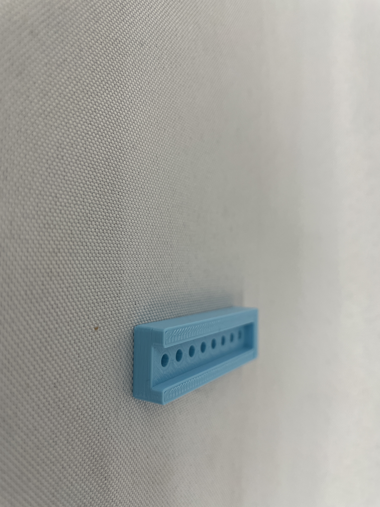

# Week 5: 3D Design and Printing
Outline:
<br><br>
<a href="#A">Print (Final Project Casing Prototype)</a>
<br><br>
<a href="#B">Photogrammetry</a>
<br><br>
[Link to updated final project proposal](../13_Final_Project/index.html).
<a id="A">
##Print:
###Process of creation:
Made a sketch of a rectangle with eight holes in it, then extruded, then extruded another rectangle within that rectangle to create a cut out area inside.
Combined them all into one component, export, slice, and make smaller for size and time reasons, added a brim.
The I printed it, and the first few times it didn't work because of an error in my model, and because I needed to slow down the printer. So I remedied those issues and ended up being successful and printing what I had designed!
###Here are all the files for this print:
[Fusion link]
<br><br>
[STL file]<a download href='../4_AbiAdam_Casing.stl.textClipping'>STL File<\a>
<br><br>
[Gcode file]
###Results:
<img src="IMG_5947.jpeg" alt="Uno pic" style="width:262px;height:400px;">
<img src="IMG_5956.jpeg" alt="Uno pic" style="width:262px;height:400px;">
<img src="IMG_5959.jpeg" alt="Uno pic" style="width:262px;height:400px;">
<img src="IMG_5963.jpeg" alt="Uno pic" style="width:262px;height:400px;">
<img src="IMG_5966.jpeg" alt="Uno pic" style="width:262px;height:400px;">

<img src="IMG_5964.jpeg" alt="Uno pic" style="width:262px;height:400px;">
###Lessons:
Further brainstorming has led me to conclude that I should use buttons instead of photoresistors/thermisters for the input in my final project. Sadly, that makes this design obsolete. However, the many iterations it went through while I was printing it have taught me to always triple check my models before printing them, and to go to the source to try and locate mistakes before all else.
<a id="B">
##Photogrammetry:
Here is a [link](https://www.scandy.co/apps/scandy-pro) to the app I used, Scandy.
<br><br>
Here is a link to my scan:
<br><br>
!Note! I do not recommend this app as it only uses the selfie camera and greatly limits the number of scans you can take.